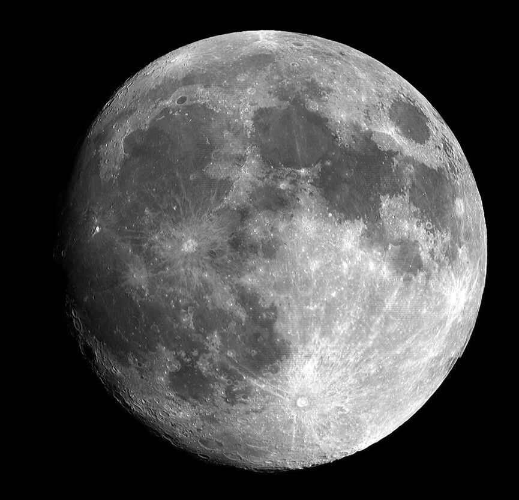

ABOUT YUNSONG
研究月球内部结构的地球物理博士生。平时用 Python、Fortran 和 GMT 处理地震与月震数据， 把这些工具慢慢做成了能用的软件，也把过程写进了这个站点。
云凇之家不是公司官网，是个人主页：放研究相关工具、实验页面和一些慢慢琢磨的东西。

博士阶段主要研究月球内部结构与自由振荡，常和 Apollo 月震数据、长周期波形打交道。 数据多了就想着让处理过程省点事，于是自己写了 SeisY、SeisRT 这些工具， 用 Python、Fortran 和 GMT 把从读数据到出图这一套流程串了起来。
技术栈主要在科学计算和 Web 之间切换：ObsPy、Mineos 处理波形和本征模， Flask 加 SQLite 做文献管理这类小平台。代码写得多了，慢慢养成了先想清楚数据怎么组织、再动手做界面的习惯。
月球内部结构、自由振荡、Apollo 月震与长周期波形。
Python、Fortran、GMT、ObsPy、Mineos、Flask、SQLite、PyQt。
从做研究到把工具和页面沉淀下来，大致是这样一条线。
围绕月球内部结构与自由振荡开展工作，长期处理 Apollo 月震数据和长周期波形。
数据一多，手工处理就难以为继。于是用 PyQt、Python、Fortran 把读波形、看事件、整理数据、出图串成工具，也就是 SeisY、SeisRT。
个人主页放项目与实验页面；YSXS 用 Flask + SQLite 做文献与学术资料管理，方便自己日常检索和沉淀。
代码主要放在 GitHub，站点通过 yshome.top 公开。欢迎交流使用问题、改进建议，或一起琢磨数据处理里的坑。
这里不是虚构团队介绍，而是站点上真实维护的主要项目。
不是企业文化口号，是写代码、做研究时自己比较在意的几条。
界面可以后改，数据组织乱了后面全是补丁。动手前先想清楚原始波形、中间结果和出图链路怎么摆。
同一套读取、滤波、出图流程会反复出现。做一次封装，比每次复制粘贴更省事，也更少出错。
科研软件不必花哨，但要跑得起来、出得了图、自己愿意天天打开。可用性优先于功能堆叠。
能开源的放 GitHub，站点用真实备案公开访问。研究工具被别人用上、被指出问题，本身就有价值。
科学计算和 Web 都会碰到。选技术看是否省事、是否稳定，而不是追新。
对 SeisY、SeisRT、YSXS 或月震数据处理有想法，都可以邮件或 GitHub 联系。能一起把坑填了最好。
使用问题、合作交流、改进建议，都欢迎写邮件或在 GitHub 提 issue。